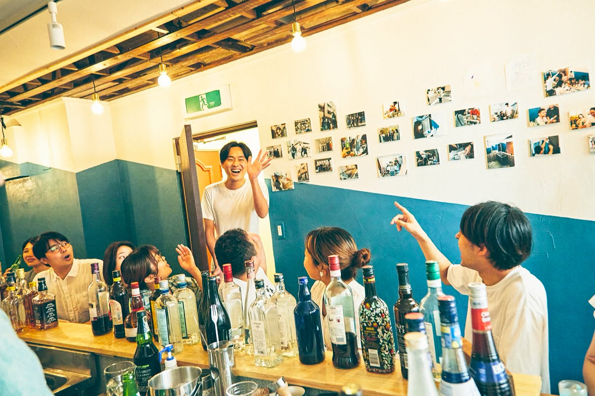
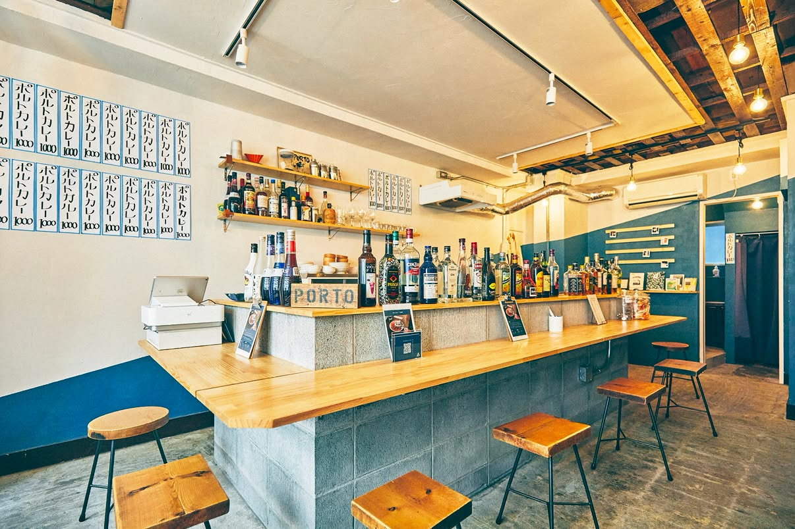

日本橋のソーシャルバーPORTOで、
小さな商いを続ける人と、問いを探究する人の話を聞きます。
そのあと、参加した人たちで問いを出し合い、
選んだ問いについて、お酒を片手にみんなで話します。
PORTO日本橋／POOLO生向け／参加無料／定員10名
LINEで申し込むあたらしい旅の学校POOLO × ソーシャルバーPORTO

POOLOで問いを立てて、仲間と話しながら考えてきた。その問いを、いつか何かの形にしてみたい。お店を開くほどでも、副業にするほどでもない、自分にちょうどいい始め方を探している。
PORTOでは、会社の仕事とは別に月に1回カウンターに立つ店長たちがいて、そこから、個人の小さな商いを育てる「コアキナイ」も生まれました。この夜は、たくみさんからコアキナイとPORTOの考え方を聞き、自分で小さく始めてみたいことの種を、POOLO生どうしで話しながら探します。
始めたいことが決まっていなくても参加できます。気になっていることがあれば、それを持ってきてください。

2026年5月、POOLOのみっちーがPORTOのカウンターで、代表のたくみさんと話した夜がはじまりです。
PORTOは、毎月1回お店に立つ日替わりの店長たちが営むソーシャルバーです。2018年に有楽町で始まり、いまは日本橋や長野県辰野町にもお店があります。つくったのは、たくみさんこと嶋田匠さん。たくみさんは、居場所には「よりどころ」と「やくどころ」の両方が要る、と考えてきました。いるだけで認められる関係と、誰かの役に立って必要とされる関係のことです。
5月のその夜は、問い、探究、コミュニティ、贈与など、POOLOで毎日のように使っていることばが、カウンターで普通に交わされていました。そこでたくみさんから聞いたのが、コアキナイが生まれた話です。PORTOに人が集まるようになって、何かを試してみるときのハードルが下がり、自分のつくったものを誰かに差し出すことも、前より気軽にできるようになった。そこから、個人の小さな商いを育てる集まり「コアキナイ」ができたそうです。
その夜から、たくみさんとみっちーは定期的に打ち合わせを重ねてきました。POOLO生が自分のプロジェクトを始めるのを、PORTOやコアキナイと応援する「POOLO for MY PROJECTS」のようなことも、一緒にできそうだね、と話しています。
POOLOでは、気になったことを問いにして、人に話し、返ってきたことばでまた問いを書き換えることを大切にしています。POOLOは考え続けることを、PORTOは小さく始めることを、それぞれ大事にしてきました。その2つのやり方を持ち寄る最初の回として、POOLO生と一緒に話す夜を開くことにしました。
シリーズの名前「旅と問いと、居場所と」は、「旅と問いと」をPOOLOから、「居場所と」をPORTOから取っています。今回がその1回目です。
はじめの25分で、ふたりがそれぞれの話をします。そのあとの問いだしと対話は、この話を手がかりに進みます。
嶋田 匠（たくみ）
森みたいな株式会社 代表／ソーシャルバーPORTO
1992年、東京生まれ。2015年に株式会社リクルートキャリア（現/株式会社リクルート）に新卒入社。約3年間リクルート代理店の経営支援/組織開発に従事し、独立。2018年に日替わり店長のソーシャルバー「PORTO（ポルト）」を有楽町に開業。その後、北品川・日本橋蛎殻町・長野県辰野町に店舗を展開。
2019年から、コアキナイ（個商×小商）が生まれ育つエコシステム「コアキナイ」を主宰。4ヶ月でコアキナイをつくるゼミや、お互いのコアキナイを育み合うコミュニティ、コミュニティの拠点となる職住一体のシェアハウス、コアキナイを差し出すガレージを運営。2025年から、小田原市石橋に週替わりの家守で営まれるゲストハウス兼シェアハウス「森みたいな家」を開業。暮らしを起点に都市と地域の活かし合う繋がりを実践・探究する。代表を務める「森みたいな株式会社」では、マイプロジェクトデザイン領域／コミュニティデザイン領域で、それぞれ官民学の幅広いクライアントとの共創に取り組む。
当日の話
コアキナイの話をします。会社の仕事とは別に、自分で小さく何かを始めてみる。そんな大人のマイプロジェクトが、PORTOとコアキナイでどう生まれてきたのかを聞きます。

恩田 倫孝（みっちー）
株式会社TABIPPO 取締役／株式会社コオドリ 代表
新潟県出身。商社に勤めたあと、1年間の世界一周を経て、2014年からTABIPPOに参画。POOLOの前身となる「旅大学」を立ち上げ、累計700回のイベントを企画・運営してきました。2019年にPOOLOを立ち上げ、2024年には旅と教育の会社コオドリを創業。渡航国数は51。
当日の話
「問いと探究の往還」の話をします。気になったことを問いにして、人に話し、返ってきたことばでまた問いを書き換える。POOLOでは、この行き来が続いている状態を探究と呼んでいます。ひとりで考え続けるだけだったり、始めたことを人に見せなかったりすると、この行き来は途中で止まります。当日は、行き来を続けるためにPOOLOでしていることを話します。
たとえば、こんな問いが出るかもしれません
考え続けることと、
始めることは、
どうつながっているのか。
あなたなら、どう考えますか。
当日の問いは、参加した人たちがその場で出します。ここに書いたのは、ふたりの話から浮かびそうな問いの例です。
ふたりの話を聞いたあと、テーブルごとに問いを出し、選んだ問いについて全員で話します。
開場
受付をして、カウンターで最初の1杯を注文してください。
この夜が生まれたわけ（5分）
POOLOとPORTOが、なぜ一緒にこの夜を開くのかを、みっちーとたくみさんから話します。
チェックイン（10分）
同じテーブルの人と、呼ばれたい名前と、今日ここに来た理由をひとことずつ話します。
ふたりの話（25分）
たくみさんからコアキナイの話、みっちーから問いと探究の往還の話を聞きます。
テーブルで問いを出す（10分）
3〜4人のテーブルで、ふたりの話を聞いて浮かんだ問いを書き出します。
選んだ問いで、哲学対話（40分）
テーブルから出た問いの中から選び、参加者全員で話します。
この夜の感想を聞かせてもらう（10分）
シリーズの1回目なので、よかったところと、次に変えたほうがいいところを参加者から聞かせてもらいます。
チェックアウト（10分）
今夜持ち帰る問いを、ひとりずつ話して終わります。
おわり
そのまま残って、カウンターで話していくこともできます。
ひとつの問いについて、輪になって、それぞれが自分のことばで考えを話す時間です。
哲学の知識はいりません。本で読んだことより、自分が経験したことや、いま感じていることから話します。ほかの人の考えを聞いて、自分の考えが少し変わっていくのを楽しむ時間なので、最後に結論をまとめることもしません。はじめての方も、そのまま来てください。
 何を話してもいい
何を話してもいい 人の考えを否定しない
人の考えを否定しない 話さずに聞いているだけでもいい
話さずに聞いているだけでもいい今回は、向かないかもしれない方
ソーシャルバー PORTO
「いつでも安心して帰ってこられる」「何かが生まれるつながりが生まれる」、そんな港町のような場をつくりたい、という想いから名づけられたバーです。毎月1回お店に立つ日替わりの店長たちが営んでいて、会社で働く人も、独立して働く人も、いまは働いていない人も、アーティストも、マーケターも、歯医者さんも店長をしています。
PORTOのページを見るPOOLO生の方は、POOLO公式LINEからお申し込みください。参加無料、定員は10名です。21:50に終わったあとも、話し足りなければカウンターで続けられます。
PORTO日本橋・POOLO生向け・参加無料・定員10名
LINEで申し込む1. POOLO公式LINEを友だち追加
2. 届いた申込フォームに答える